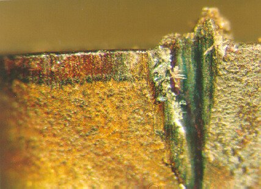
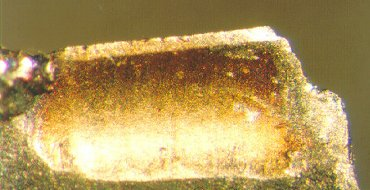
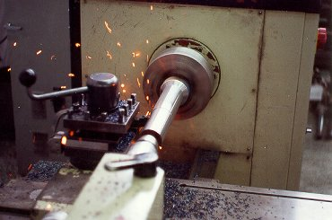
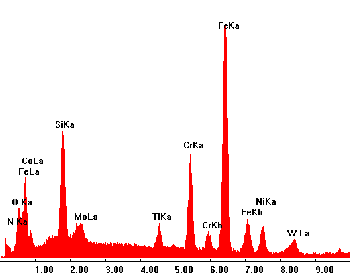

LMP>Research Guidelines>GEODEF>Machinability analysis for different cutting tools
OBJECTIVESIn order to obtain data from machining behavior with different defined geometry tools, the Defined Geometry Tools Machining Group (GEODEF) develops machinability assays works, regarding the tool wear behavior, finishing quality for different machining conditions, chips types and machining forces. These works are accomplished in partnership with defined geometry tool manufacturers. PROCEDURESFor wear behavior assay, there are made assays with different cutting parameters, and through pre-established wear measurements during the assays, the wear curves are obtained. 
Flank Wear For the surface quality assay, the roughness parameters are measured, changing machining parameters.  Crater Wear For the machining forces assays, the forces for different machining parameters
are analyzed. RESULTSThe obtained results on machining assays are greatly influenced from cutting
tools on different machining criterions.  Turning Assay The tools are analyzed in parallel with assays on a scanning electron microscope, to certify wear conclusions and help to explain possible residual elements on the cutting region. 
|
| Contact:
GEODEF Rolf Bertrand Schroeter Prof. Dr. Eng. |
Last update 07.07.2006 |